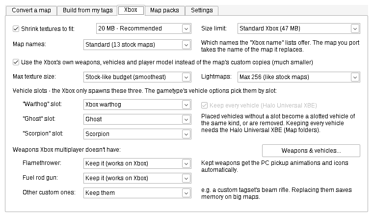
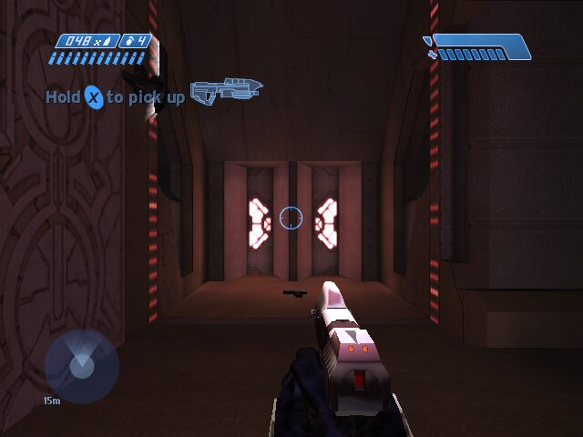
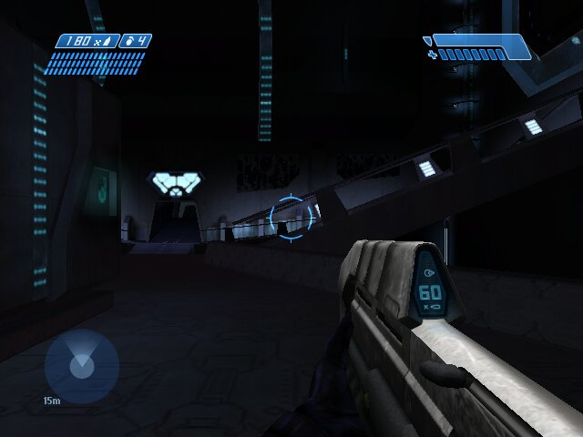
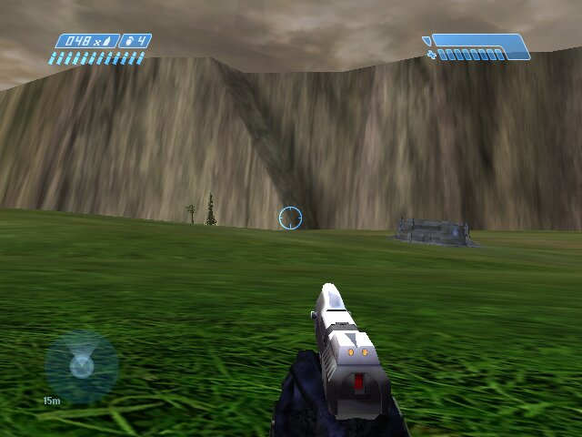

Halo Map Porter
Converts Halo: Combat Evolved maps between the Master Chief Collection, Halo Custom Edition and the original Xbox, in any direction. It can also build one map for all three games straight from your H1A-EK tags while you're still working on it.

What it takes care of
Any direction
MCC to Custom Edition, Custom Edition to the Xbox, the Xbox back to the PC, and every other pair. It reads the map, rebuilds it for the target game and fixes what that game can't take.
Made for the Xbox
It swaps the map's copies of stock weapons, vehicles and the player for the Xbox originals, and converts Gearbox models, HUDs and sounds. It also flattens shaders the Xbox can't draw, and gives PC-only weapons Xbox stand-ins or keeps them.
Fits the console
It keeps maps within the Xbox's 47 MB file size, its 22 MB of tag memory and a texture memory target (22, 20 or 18 MB). It shrinks your own textures as far as it needs to, and never touches the stock ones.
Weapons & vehicles
See what every weapon and vehicle costs in tag memory and file size. Replace or drop them before you build.
Map folders and packs
Builds maps as folders for the Halo Universal and Halo 1 Unlimited XBEs. Each folder can have a preview picture, a description, player counts, gametypes and genres. Packs can have an order and series pictures too.
Fixes on its own
It repairs broken tag values and recovers scripts that call functions the target game doesn't have. It reports every change it made, so you know what's different from the original.
Getting started
- Download
HaloMapPorter.exefrom the latest release. There's nothing to install. - Run it. The first time, it opens on the Settings tab: point it at your Custom Edition folder, your MCC maps folder and, for Xbox output, an Xbox tagset such as haloxbox-revised.
- Click Download Invader and the app fetches the map compiler it uses.
- On the Convert a map tab, pick the map and the game to convert it to, then click Convert. (The game it's from is detected.)
- For the Xbox, copy the output folder into
maps\on the console.
What you need
- Windows 10 or 11
- Halo Custom Edition, for Custom Edition output
- Halo: The Master Chief Collection, for MCC output
- An Xbox tagset or your own dumped Xbox maps, for Xbox output
- The MCC mod tools (H1A-EK), only for building from your tags
The full manual covers every option and the troubleshooting messages. It's README.txt in the repository and in each download.
Ported maps on the Xbox


